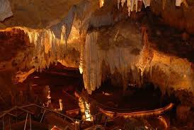

Sitios Turísticos

Cueva de las maravillas

Playa Juan Dolio

Catedral San pedro de macoris

Museo de historia

Centro Histórico ron barcelo

Rio Cumayasi
Playa San Pedro de Macoris
Monumento de San Pedro de Macoris